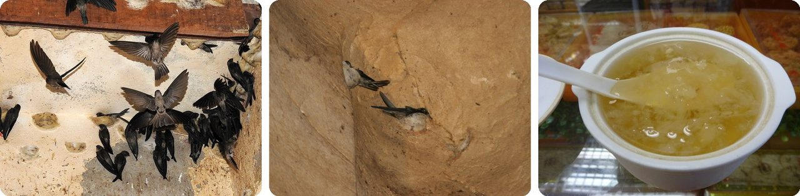
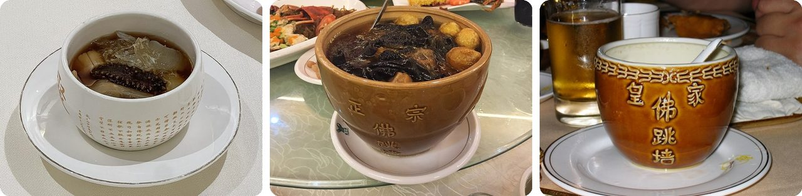
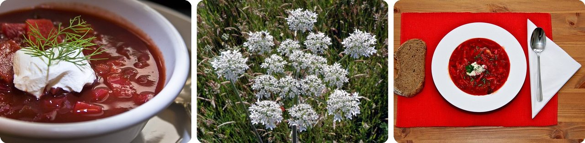
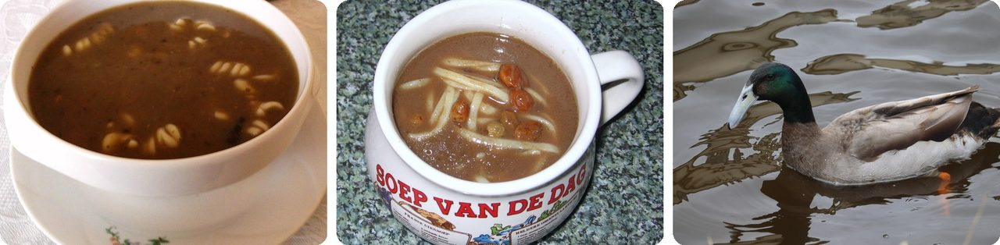
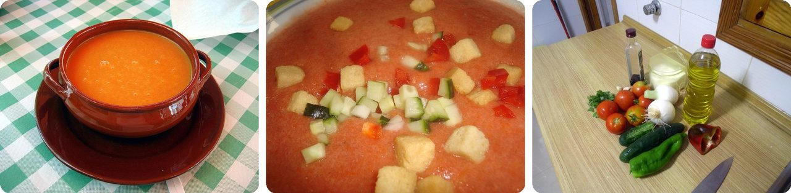
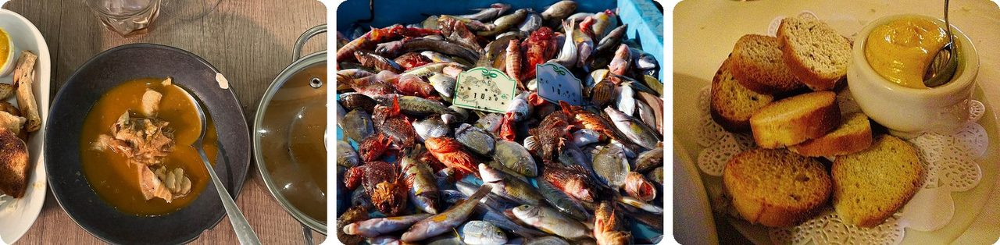
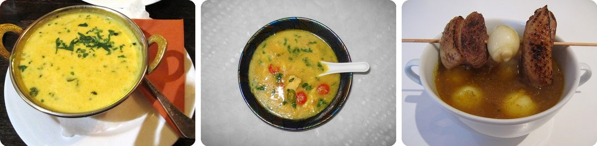
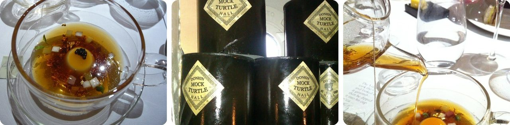
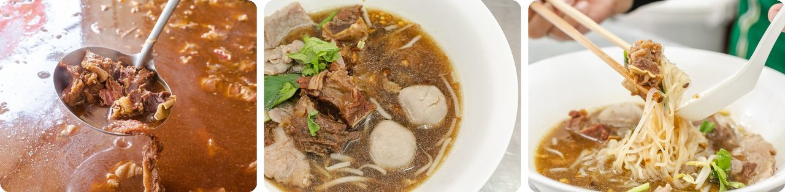
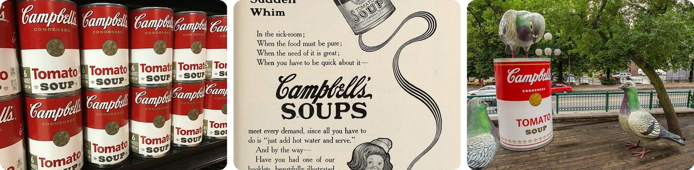

🌍 Top 10 Surprising Soups of the World
Oct 14, 2026
1. 🇨🇳 Bird's nest soup is made from bird spit

Little birds called swiftlets build their nests out of their own saliva. They lay down sticky strands that harden into a small cup glued to a cave wall. People have prized these nests as a delicacy for over 400 years, especially in Chinese cooking.
Dropped in water, the nest softens into a soft, jelly-like soup. Good nests sell for up to $9,500 a kilogram, about the price of a used car for something that weighs as much as a bag of sugar.
And here's the twist: they're often called swallow's nests, but swiftlets aren't swallows. Their closer cousins are hummingbirds.
It's the world's fanciest spit.
2. 🇨🇳 Buddha Jumps Over the Wall smelled good enough to tempt a monk

This soup comes from Fujian, in southeast China. The legend goes like this: a traveling scholar cooked his food in an old wine jar when he got to the city of Fuzhou. The smell drifted over the wall of a Buddhist temple next door.
Buddhist monks there don't eat meat. But one of them smelled the soup, gave in, and jumped over the wall to taste it. A poet in the group joked that even the Buddha himself would jump the wall for it.
Some recipes use up to 30 main ingredients, from quail eggs to ham to mushrooms, and take one to two full days to make.
Basically, a soup that smells good enough to break the rules.
3. 🇺🇦 Borscht started as soup made from a weed

Borscht is famous for its bright red color from beets. But the very first versions were made from pickled stems and leaves of hogweed, a wild plant that grows in damp meadows. The word "borscht" comes from the old Slavic name for hogweed.
Later, cooks switched to beets, cabbage, carrots, potatoes and tomatoes, and beets became the star.
Borscht even went to space. In March 1961, a Soviet spacecraft carrying animals and a test dummy played a recorded borscht recipe over the radio, to check that its equipment worked before people flew.
In other words, the world's most famous red soup is named after a weed.
4. 🇵🇱 In Poland, duck blood soup meant "no, you can't marry her"

Czernina is a Polish soup made with duck blood and clear poultry broth. Its name comes from the Polish word for "black." Sugar and vinegar make it sweet and sour, and many recipes add dried plums, pears or cherries.
Up until the 1800s, it came with a message. A young man would visit a girl's family to ask to marry her. If the answer was no, they served him czernina.
Picture sitting down, hoping for good news, and getting a bowl of dark duck-blood soup instead.
It's a "no" you can eat.
5. 🇪🇸 Gazpacho had no tomatoes until the 1800s

Gazpacho is a cold soup from southern Spain, made of raw blended vegetables. It's eaten in summer because it's refreshing.
Older versions were made from stale bread, garlic, olive oil, salt and vinegar, all pounded together in a bowl. The red gazpacho most people know only appeared in the 1800s, when cooks started adding tomatoes.
Before fridges, people kept it cool by leaving it in an unglazed clay pot. Water seeped through the clay and evaporated, which cooled the soup inside.
Think of it as a salad you drink.
6. 🇫🇷 Bouillabaisse began as fishermen's leftovers in Marseille

Bouillabaisse is a fish soup from the port city of Marseille, in southern France. Fishermen first made it with bony rockfish nobody would buy at the market or in restaurants.
The name is two old local words stuck together: "boil" and "turn down the heat." That's the recipe in a nutshell: bring it to a boil, then let it simmer.
Today chefs take it very seriously. In 1980, 11 Marseille restaurant owners even wrote a "Bouillabaisse Charter" setting out which fish belong in a real one.
The fish nobody wanted ended up with its own rulebook.
7. 🇮🇳 Mulligatawny just means "pepper water"

Mulligatawny comes from a spicy South Indian soup called rasam. Its name comes from two Tamil words: milagu (black pepper) and thanneer (water).
British people living in India liked it so much that they took it home and changed it, adding chicken, mutton and lentils. It shows up in English writing as early as 1784.
By 1827, a British cookbook writer noticed coffee houses pasting the strange word on their windows. People walked in just to find out what it was.
It's a soup whose name is just its recipe.
8. 🏴 Mock turtle soup is a fake turtle soup

In the 1700s, green turtle soup was all the rage in England after sailors brought turtles home from the Caribbean. People hunted the turtles until they were nearly gone.
So English cooks made a copy. They used a calf's head, prepared overnight, to imitate the texture and taste of turtle meat. It caught on, and in the United States the fake became more popular than the real thing. Cincinnati still loves it.
And here's the funny part: by the late 1800s, ads for canned mock turtle soup warned shoppers to "Beware of Imitations."
Basically, a fake that warned you about fakes.
9. 🇹🇭 A Bangkok noodle soup has been cooking since 1974

At Wattana Panich, a family restaurant in Bangkok, Thailand, the goat and beef noodle soup comes from a pot that's never emptied. Cooks keep topping it up with fresh ingredients, and the broth keeps going. It has been cooking since 1974, more than 50 years.
It's called a perpetual stew, or "forever soup." In Tokyo, a restaurant called Otafuku has served the same oden broth every day since 1945.
In 2023, hundreds of people in New York City joined a "Perpetual Stew Club," each bringing an ingredient to add. Their pot lasted 60 days.
Think of it as a soup older than most of the people eating it.
10. 🇺🇸 Campbell's soup shrank by taking out half the water

Soup is heavy because it's mostly water, which made it expensive to ship. In 1897, a chemist named John T. Dorrance joined the Campbell company for $7.50 a week.
His idea: cook the soup with half the water. That makes the can smaller and lighter → cheaper to ship and store → you add the water back at home.
That "condensed" soup made Campbell's famous, and Dorrance later ran the whole company.
In other words, the secret ingredient was leaving something out.
Fun fact
In 1962, artist Andy Warhol painted Campbell's soup cans, copying the red-and-white labels almost exactly. Later he played with the design, flipping the colors and making them stranger. Those paintings of ordinary grocery cans became some of the best-known pop art ever made. Next time: everyday objects that became famous works of art.
Photo credits (Wikimedia Commons)
- #1: Edible-nest Swiftlet Aerodramus fuciphagus nest best by Raju Kasambe 02.jpg by Dr. Raju Kasambe, CC BY-SA 4.0
- #1: Aerodramus fuciphagus · Gomantong Caves, Kinabatangan, Sabah, Malaysia by no rights reserved, CC0
- #1: Bird's-nest-soup-Miri-Malaysia.jpg by Robert Staudhammer from Earth, CC BY-SA 2.0
- #2: Fotiaoqiang at Juchunyuan, Fuzhou (20250127114656).jpg by N509FZ, CC BY-SA 4.0
- #2: Buddha jumps over the wall at Jingrong (20161203135907).jpg by N509FZ, CC BY-SA 4.0
- #2: 'Buddha Jumps the Wall' (flickr) by ToastyKen, CC BY 2.0
- #3: Borscht served.jpg by liz west from Boxborough, MA, CC BY 2.0
- #3: Common hogweed (Heracleum sphondylium) (flickr) by Peter O'Connor aka anemoneprojectors, CC BY-SA 2.0
- #3: Borscht with bread.jpg by Juerg Vollmer from Zürich, Schweiz, CC BY-SA 2.0
- #4: Czernina Oborniki.jpg by MOs810, CC BY-SA 3.0
- #4: Czernina.zupa.jpg by No machine-readable author provided. Julo assumed (based on copyright claims)., Public domain
- #4: Anas platyrhynchos domesticus · Warmond, Zuid-Holland, Netherlands by (c) Michel Langeveld, some rights reserved (CC BY), CC BY
- #5: Gazpacho Cazuela Barro.jpg by Bocadorada, CC BY-SA 2.0
- #5: Gazpacho andaluz.jpg by Juan Emilio Prades Bel, CC BY-SA 4.0
- #5: Gazpacho ingredients.jpg by popsique, CC BY-SA 2.0
- #6: Bouillabaisse de chez Fonfon dans un restaurant du Vieux-Port (Marseille) en novembre 2022.JPG by Benoît Prieur, CC0
- #6: Poissons pour la bouillabaisse sur le Vieux-Port de Marseille.jpg by smallkaa, CC BY 2.0
- #6: Bouillabaisse 08.jpg by Arnaud 25, CC BY-SA 4.0
- #7: Mulligatawny-Soup Mumbai.jpg by GeoTrinity, CC BY-SA 3.0
- #7: Mulligatawny Soup (Pepper Water Soup).JPG by Miansari66, CC0
- #7: Historic recipe Mulligatawny 1828 1868.jpg by GeoTrinity, CC BY-SA 3.0
- #8: Mock turtle soup (7357197120).jpg by Jessica Spengler from Brighton, United Kingdom, CC BY 2.0
- #8: Mock Turtle (8427909238).jpg by Howard Dickins from Cardiff, UK, CC BY-SA 2.0
- #8: Pouring mock turtle soup (with disolved pocket watch) (7164137203).jpg by Jeremy Keith from Brighton & Hove, United Kingdom, CC BY 2.0
- #9: Bangkok street food - Wattana Panich (flickr) by streetsoffood, CC BY 2.0
- #9: Bangkok street food - Wattana Panich (flickr) by streetsoffood, CC BY 2.0
- #9: Bangkok street food - Wattana Panich (flickr) by streetsoffood, CC BY 2.0
- #10: Campbell tomato soup cans.jpg by Mike Mozart, CC BY 2.0
- #10: Campbell's Condensed Tomato Soup, 1905.jpg by Hill, Janet McKenzie, 1852-1933, ed; Boston Cooking School (Boston, Mass.), No restrictions
- #10: Campbell's Soup Can (14785567641).jpg by Tony Webster from Portland, Oregon, United States, CC BY 2.0


.jpg){kind=link}
.jpg){kind=link}


_en_novembre_2022.JPG){kind=link}


.JPG){kind=link}

.jpg){kind=link}
.jpg){kind=link}
_(7164137203).jpg){kind=link}


.jpg){kind=link}